异格干员说明 »
- 异格干员和其原型干员除信赖值外的各项数据均不互通，基建心情值亦不互通。
- 在战斗编队（包括编入支援单位）、基建入驻时可同时编入异格干员和其原型干员。并会各自产生信赖值，叠加至共享信赖值上（支援单位除外）。
干员信息
[编辑]特性
[编辑]- 分支
- 剑豪
- 描述
- 普通攻击连续造成两次伤害
- 分支信息
- 可以且优先攻击自身阻挡的单位（即使目标处于攻击范围外或为飞行单位）。
获得方式
[编辑]- 获得方式
- 公开招募 中坚寻访
- 上线时间
- 2019年7月9日 16:00
属性
[编辑]| 精英0 1级 | 精英0 满级 | 精英1 满级 | 精英2 满级 | 信赖加成上限 | |
|---|---|---|---|---|---|
| 生命上限 | 1229 | 1684 | 2188 | 2880 | — |
| 攻击 | 249 | 361 | 469 | 610 | +50 |
| 防御 | 154 | 221 | 288 | 352 | +50 |
| 法术抗性 | 0 | 0 | 0 | 0 | — |
| 部署费用 | 19 | 19 | 21 | 23 | — |
| 阻挡数 | 2 | 2 | 2 | 2 | — |
| 攻击间隔 | 1.3s | 1.3s | 1.3s | 1.3s | — |
| 再部署时间 | 70s | 70s | 70s | 70s | — |
- 隐藏势力
- 无
攻击范围
[编辑]天赋
[编辑]| 第一天赋 | 条件 | 描述 |
|---|---|---|
| 呵斥 | 精英一 | 在场时每5秒回复全场友方角色1点攻击/受击技力 |
| 精英二 | 在场时每4秒回复全场友方角色1点攻击/受击技力 | |
| 精英二 · X模组 2级 | 在场时每3秒回复全场友方角色1点攻击/受击技力 | |
| 精英二 · X模组 3级 | 在场时每3秒回复全场友方角色1点攻击/受击技力，自身额外回复1点技力 |
| 第二天赋 | 条件 | 描述 |
|---|---|---|
| 持刀格斗术 | 精英二 | 攻击力+5%，防御力+5%，物理闪避+10%攻击力+6%（+1%），防御力+6%（+1%），物理闪避+13%（+3%） |
| 精英二 · Y模组 2级 | 攻击力+11%，防御力+11%，物理闪避+15%攻击力+12%（+1%），防御力+12%（+1%），物理闪避+18%（+3%） | |
| 精英二 · Y模组 3级 | 攻击力+15%，防御力+15%，物理闪避+18%攻击力+16%（+1%），防御力+16%（+1%），物理闪避+21%（+3%） | |
| 直接加算直接乘算 （直接乘算之间为加法计算）最终加算最终乘算详见 游戏数据基础 · 属性基本公式 | ||
潜能提升
[编辑]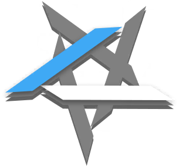
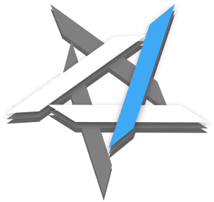
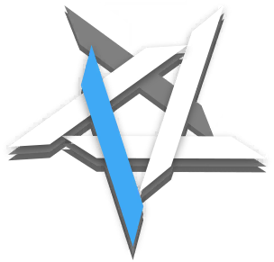
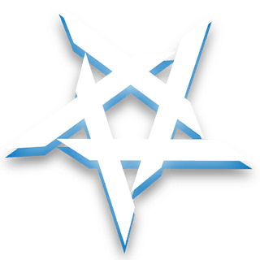
注：潜能提升的数值均为原始属性增减。属性面板选了潜能后，已生效的项在这里点亮。
技能
[编辑]技能1（精英0开放）
[编辑]鞘击
攻击回复自动触发| 等级 | 描述 | 初始 | 消耗 | 持续 |
|---|---|---|---|---|
| 1 | 下次攻击使用刀鞘砸向敌人，造成相当于攻击力200%的物理伤害，令命中目标晕眩1秒 | 0 | 7 | |
| 2 | 下次攻击使用刀鞘砸向敌人，造成相当于攻击力210%的物理伤害，令命中目标晕眩1秒 | 0 | 7 | |
| 3 | 下次攻击使用刀鞘砸向敌人，造成相当于攻击力220%的物理伤害，令命中目标晕眩1秒 | 0 | 7 | |
| 4 | 下次攻击使用刀鞘砸向敌人，造成相当于攻击力230%的物理伤害，令命中目标晕眩1.25秒 | 0 | 6 | |
| 5 | 下次攻击使用刀鞘砸向敌人，造成相当于攻击力240%的物理伤害，令命中目标晕眩1.25秒 | 0 | 6 | |
| 6 | 下次攻击使用刀鞘砸向敌人，造成相当于攻击力250%的物理伤害，令命中目标晕眩1.25秒 | 0 | 6 | |
| 7 | 下次攻击使用刀鞘砸向敌人，造成相当于攻击力260%的物理伤害，令命中目标晕眩1.5秒 | 0 | 5 | |
| Ⅰ | 下次攻击使用刀鞘砸向敌人，造成相当于攻击力280%的物理伤害，令命中目标晕眩1.5秒 | 0 | 5 | |
| Ⅱ | 下次攻击使用刀鞘砸向敌人，造成相当于攻击力300%的物理伤害，令命中目标晕眩1.5秒 | 0 | 5 | |
| Ⅲ | 下次攻击使用刀鞘砸向敌人，造成相当于攻击力320%的物理伤害，令命中目标晕眩1.5秒 | 0 | 4 |
技能2（精英1开放）
[编辑]赤霄·拔刀
攻击回复手动触发| 等级 | 描述 | 初始 | 消耗 | 持续 |
|---|---|---|---|---|
| 1 | 对前方范围内最多4名敌人造成相当于攻击力330%的物理和相当于攻击力330%的法术伤害 | 10 | 27 | |
| 2 | 对前方范围内最多4名敌人造成相当于攻击力340%的物理和相当于攻击力340%的法术伤害 | 10 | 27 | |
| 3 | 对前方范围内最多4名敌人造成相当于攻击力350%的物理和相当于攻击力350%的法术伤害 | 10 | 27 | |
| 4 | 对前方范围内最多5名敌人造成相当于攻击力370%的物理和相当于攻击力370%的法术伤害 | 12 | 26 | |
| 5 | 对前方范围内最多5名敌人造成相当于攻击力380%的物理和相当于攻击力380%的法术伤害 | 12 | 26 | |
| 6 | 对前方范围内最多5名敌人造成相当于攻击力390%的物理和相当于攻击力390%的法术伤害 | 12 | 26 | |
| 7 | 对前方范围内最多6名敌人造成相当于攻击力410%的物理和相当于攻击力410%的法术伤害 | 14 | 25 | |
| Ⅰ | 对前方范围内最多6名敌人造成相当于攻击力440%的物理和相当于攻击力440%的法术伤害 | 15 | 23 | |
| Ⅱ | 对前方范围内最多6名敌人造成相当于攻击力470%的物理和相当于攻击力470%的法术伤害 | 16 | 21 | |
| Ⅲ | 对前方范围内最多7名敌人造成相当于攻击力500%的物理和相当于攻击力500%的法术伤害 | 20 | 20 |
※可对空；先造成法术伤害，后造成物理伤害
技能3（精英2开放）
[编辑]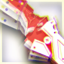
赤霄·绝影
攻击回复手动触发| 等级 | 描述 | 初始 | 消耗 | 持续 |
|---|---|---|---|---|
| 1 | 向周围寻找最近的敌方目标，对其发动10次连续斩击，每次造成相当于攻击力200%的物理伤害，并在最后一击时使目标晕眩2秒 | 10 | 40 | |
| 2 | 向周围寻找最近的敌方目标，对其发动10次连续斩击，每次造成相当于攻击力210%的物理伤害，并在最后一击时使目标晕眩2秒 | 10 | 40 | |
| 3 | 向周围寻找最近的敌方目标，对其发动10次连续斩击，每次造成相当于攻击力220%的物理伤害，并在最后一击时使目标晕眩2秒 | 10 | 40 | |
| 4 | 向周围寻找最近的敌方目标，对其发动10次连续斩击，每次造成相当于攻击力230%的物理伤害，并在最后一击时使目标晕眩2.5秒 | 10 | 38 | |
| 5 | 向周围寻找最近的敌方目标，对其发动10次连续斩击，每次造成相当于攻击力240%的物理伤害，并在最后一击时使目标晕眩2.5秒 | 10 | 38 | |
| 6 | 向周围寻找最近的敌方目标，对其发动10次连续斩击，每次造成相当于攻击力250%的物理伤害，并在最后一击时使目标晕眩2.5秒 | 10 | 38 | |
| 7 | 向周围寻找最近的敌方目标，对其发动10次连续斩击，每次造成相当于攻击力260%的物理伤害，并在最后一击时使目标晕眩3秒 | 10 | 36 | |
| Ⅰ | 向周围寻找最近的敌方目标，对其发动10次连续斩击，每次造成相当于攻击力280%的物理伤害，并在最后一击时使目标晕眩3秒 | 13 | 34 | |
| Ⅱ | 向周围寻找最近的敌方目标，对其发动10次连续斩击，每次造成相当于攻击力300%的物理伤害，并在最后一击时使目标晕眩3秒 | 16 | 32 | |
| Ⅲ | 向周围寻找最近的敌方目标，对其发动10次连续斩击，每次造成相当于攻击力320%的物理伤害，并在最后一击时使目标晕眩4秒 | 20 | 30 |
※不可对空
※技能生效期间，持有效果：无敌、不可阻挡、晕眩免疫、冻结免疫
※若斩击次数未到 10 次之前技能范围内没有目标，立刻中止技能
后勤技能
[编辑]| 条件 | 图标 | 技能 | 房间 | 描述 |
|---|---|---|---|---|
| 精英零 | 德才兼备 技能 1 | 控制中枢 | 进驻控制中枢时，控制中枢内每个龙门近卫局干员可使控制中枢内所有干员的心情每小时恢复+0.05 | |
| 精英二 | 警司 技能 2 | 会客室 | 进驻会客室时，线索搜集速度提升25% |
精英化材料
[编辑]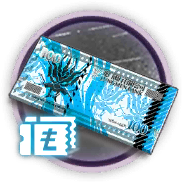
3w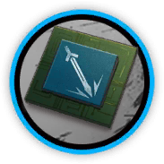
5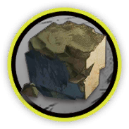
12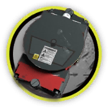
3 → 精英阶段 1→218w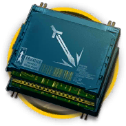
4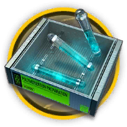
4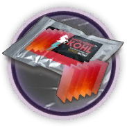
6技能升级材料
[编辑]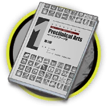
5 2 → 35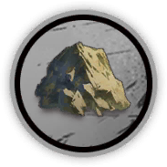
6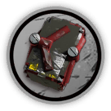
4 3 → 4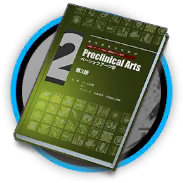
8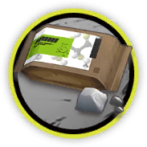
5 达到精英阶段 1 后解锁 4 → 58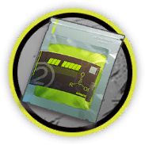
4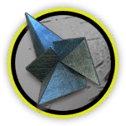
4 5 → 68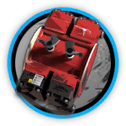
4 6 → 7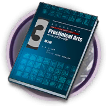
8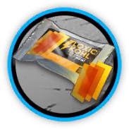
54专精训练 达到精英阶段 2 后解锁
| 等级 | 第 1 技能 · 鞘击 | 第 2 技能 · 赤霄·拔刀 | 第 3 技能 · 赤霄·绝影 |
|---|---|---|---|
| 专精 Ⅰ | 8 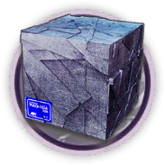 44 | 8 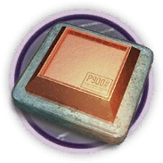 47 | 8 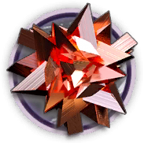 4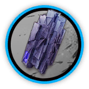 5 |
| 专精 Ⅱ | 12 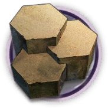 49 | 12 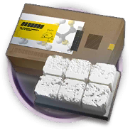 48 | 1248 |
| 专精 Ⅲ | 1567 | 15 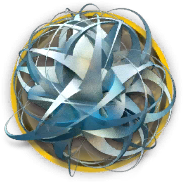 6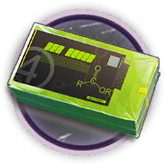 6 | 156 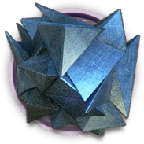 5 |
模组
[编辑]陈证章
[编辑]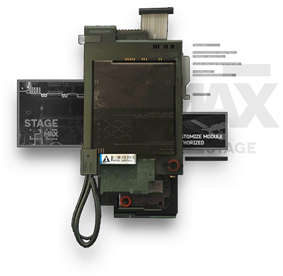
陈证章
干员陈擅长于近身搏斗中对敌人造成多段杀伤
根据外勤部门决议
在外勤任务中划分为近卫干员，行使剑豪职责
特别颁发此证章
以兹证明
罗德岛制式剑
[编辑]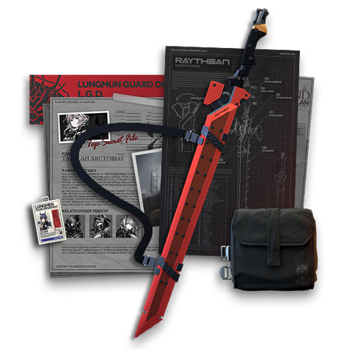
罗德岛制式剑
说明 ⓘ七月七，晴。生辰，她激动地想要为魏彦吾展示拔刀，却找不到魏彦吾的踪影。等了三天，没有等到。
五月十三，多云。以泪锋斩断了庭中的三十年老树，砸坏了屋顶。魏彦吾没有出现，只是差人植了一棵新的。她不再期待魏彦吾的认可。
一月一，大雨。贺年，倾盆大雨，去贫民区的途中路见不平，愤而出手，以一敌十五。生死攸关之际，以随身佩剑递出奔夜，伤七人，退八人。闹到了上面，魏彦吾难得出现，看了剑痕后，只看她一眼就走了。她忘了自己当时为何出手，却永远不会忘记那一眼中的失望。
十二月二十五，晴。从近卫学院返乡路上见义勇为，浑然无惧，扬眉之剑，当放则放。她意气风发，以为自己可以荡平天下不平事。
七月三十，多云。以昏迷五天为代价，递出绝影，最终斩了重大通缉犯，龙门陈晖洁，崭露头角。醒来之后，赤霄放在她的床头，魏彦吾没有来看过她。
八月十三，阴。追捕感染者罪犯途中，欲以赤霄出手，赤霄纹丝未动。而后，生死攸关之际，福至心灵，赤霄拔刀，斩塌了半个地下车库。她去找魏彦吾想知道赤霄究竟为何，魏彦吾没有见她。
九月三十，晴。赤霄二度出鞘，斩开一扇金库大门，救出其中人质。她开始理解，赤霄乃意志之剑。她以为她一直以来做得够多，其实是她做得太少。她必须更快，她必须更有力。
七月七，多云。生辰，十几年来，魏彦吾第一次提出要看一看她的剑，她凝聚一路所学，以未完成的云裂作为答卷，魏彦吾不置可否。
一月十一，晴。与罗德岛一同离开龙门。之后一路，赤霄鲜少出鞘。
在场时每3秒回复全场友方角色1点攻击/受击技力
在场时每3秒回复全场友方角色1点攻击/受击技力，自身额外回复1点技力
- 完成5次战斗；必须编入非助战陈并上场，且每次战斗至少释放一次赤霄·拔刀或赤霄·绝影
- 3星通关主题曲 5-8；必须编入非助战陈并上场，且使用陈至少歼灭16名敌人
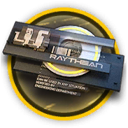
428万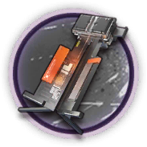
60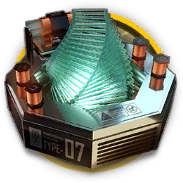
310万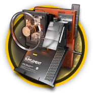
20412万- ↑ 此处游戏内原文是技能，因描述与游戏实际表现不符合，我们对其进行了修正。
往昔时光
[编辑]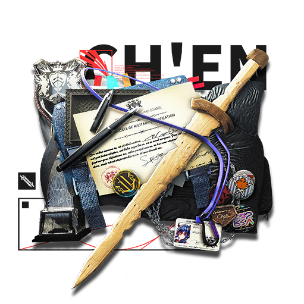
往昔时光
说明 ⓘ大地的伤痕自天际线奔袭而来，精准地击中一片维多利亚式建筑群，楼宇如同遭遇旋风袭击的树林，围绕着同一个点以放射状倒塌。在这片帝国的废墟之中，两个身影正翻过一座倒下的石碑，试图寻找高点。
“这里荒废多久了？”陈站在废墟上远眺，身后的石碑上那些曾经象征着荣誉的名字都被涂抹殆尽。
“这片校舍自从战争爆发那会儿就弃用了，还没完成学业的学弟学妹们被分流到了新的校区，完成了剩下的课程......陈陈，前面是我们以前的老训练场，你还记得吗？”风笛的声音从低处传来。
“我记得特别清楚，感觉自己当学生的时候总是错过一些好事。一到毕业路也修好了，训练场也修好了。”训练场被冲击波挤成了一片片翘起的地块，陈捡起了一块石头，丢进地块夹缝中冒出的灌木丛，躲在其中的羽兽尖叫着扑腾向远处。
“那时候已经足够好啦。”风笛的声音自远而近，停留在了陈的耳畔。
“也是。那可能是我最单纯的一段时间了，不用去思考一些麻烦的问题，只需要专心训练和学习。”
“这就是当时的你每天疯狂训练，全常规科目拿A的动力？”风笛将双手搭在陈的肩上，轻轻地摇晃着。
“回去以后，我发现有太多的事无法用刀剑解决，有些时候会觉得自己过于渺小，即便努力工作，也无法改变很多事——消灭敌人有的时候并不能解决问题。”陈摇了摇头，好像要把过去的庞杂思绪都从脑海中丢出去。
两人走下高坡，记忆中的花圃还在原地。曾经高悬的近卫学校标志一半深深插入泥土，一半斜靠在断裂的石柱上。夕阳西下，阳光倾泻在已有斑驳锈迹的标志上，仅剩的金属光泽诉说着这里曾经的荣光。
“一切都变了，维多利亚不也一样吗？”陈盯着校徽，喃喃自语道。
“还是有人没有变的。知道你要来，我前几天特意去拜访了泰勒教官。当时你走得太匆忙，留在宿舍里的文件啥的都没带走——她这些年一直保管着你这些东西。这是你的学业通过证明。哦对了，还有这个！”风笛从随身的包里掏出了一叠证件，还有一把木剑。
“这是你当年的训练用剑，按道理是要收回的，但是你的成绩太好了，教官本来打算给你个惊喜，想把这把剑送给你......”
“代我向她表示感谢。那会儿我走得太快了......”
“至少你现在回来了。这些年，我们很多同学再也没有回来。”
两人沉默了一会儿。
“十年后，你觉得你会在哪？”
“谁知道呢，应该要回去吧，还有很多事要做。”陈向远方看去，那正是龙门的方向，“那时无论来这上学还是离开，都是他们安排好的。现在，我要自己走回去了。”
攻击力+11%，防御力+11%，物理闪避+15%
攻击力+15%，防御力+15%，物理闪避+18%
- 由非助战陈累计造成100000点伤害
- 3星通关主题曲 5-9；必须携带并部署非助战陈，其他成员仅可编入7名干员
相关道具
[编辑]| 招聘合同 | 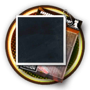 | 龙门近卫局特别督察组组长陈，正依合约前来协助罗德岛的任务。 生气的时候很可怕，平常也最好别惹她。 |
|---|---|---|
| 信物 中坚信物 | 用于提升陈的潜能。 在漫长时光中尘封许久的物件。她并非是将之忘记，而仅仅是不忍再次抚摸它锈蚀的棱角；兴许在某一天，它会重新焕发出过往的炽热吧。 |
干员档案
[编辑]【代号】陈 【性别】女 【战斗经验】四年 【出身地】龙门 【生日】7月7日 【种族】龙 【身高】168cm 【矿石病感染情况】 未公开
【物理强度】优良 【战场机动】标准 【生理耐受】优良 【战术规划】优良 【战斗技巧】卓越 【源石技艺适应性】标准
陈，龙门高级警司，龙门近卫局特别督察组组长，毕业于维多利亚皇家近卫学校，成绩优异，表现突出。在龙门近卫局供职期间，力主取缔龙门境内非法活动，对抗暴力犯罪和有组织犯罪，追缉武装逃犯与国际重犯等行动，并取得多项重大成果。
现作为特别人员协助罗德岛行动，并为现场提供战术指挥支援。
【应龙门近卫局要求，不予公开】
她是有来做体检啦，只是档案被拿走了，我这里可没留底。嗯？是龙门方面的要求啊。
——医疗干员R.T.
【源石技艺概览】
陈从来不在人前使用源石技艺，这使得大多数人都认为陈不善此道。事实上，她确实在掌控源石技艺方面表现得相当糟糕，包括且不限于造成法杖的突然损坏、防爆墙的粉碎、气浪吹飞所有纸质档案，以及一系列对实验外对象的不必要的损害。施放源石技艺后，似乎是一次性动用了太多体力的缘故，陈长官本人也会陷入疲劳状态。至少术师干员们在讨论之后都认为，陈缺乏一个良好的媒介以掌控自己的源石技艺：在缺乏可利用装备的情况下，她就是没法将自己的源石技艺凝聚成型。
我看了测试结果，法杖的形状越薄越锐，她越能适应；比起塑造新的客体，她更擅长催化法杖蕴含的源石本身。没用啊！如果能有把剑形法杖的话，可能会很适合她吧。不过谁会用那种东西啊，束手束脚的......剑不就是用来砍人的！多此一举啦。
——术师干员D
陈以全常规科目A和全教官推荐的优秀成绩自维多利亚皇家近卫学校毕业。回到龙门之后，她几乎立刻就加入了龙门近卫局。
没人知道她考入皇家近卫学校之前的经历，正如没人怀疑她的能力、她的恪尽职守、以及她的嫉恶如仇。针对陈的行事风格，配合过近卫局工作的警员曾是一片怨声载道——太严厉了，也太苛刻了。几乎所有人都认为，陈一定会在权力斗争中销声匿迹，她的锐气很快就会被无尽的事端打磨干净。
出乎所有人意料，犯罪率和伤亡率在两年内连续下降，年轻世代警员的岗位提拔越来越快、越来越实质性。陈步步高升，并加入了近卫局最重要的队伍之一，特别督察组。
特别督察组成员的任期一般不超过两年——出于对警员生命的保护，或是为了减少他们累积压力造成失误的可能性。也许这个岗位本身就不适合久待：在任务中壮烈牺牲几乎是所有老督察组成员一贯的结局。
陈没有任何退缩。她不曾退缩，不会退缩，也不懂退缩。
她成了龙门警史中升职最快的警官，同时也是最年轻的近卫局特别督察组组长。原本嘲笑或是背地里阴损她的人，无不为她的气魄和坚毅折服，毕竟对未来有规划是一回事，每一天都在执行规划是另一回事。
她为何那么卖力？为何投入自己的生命至如斯地步？没人懂，也没人能懂。
陈的废纸篓里，常有撕得粉碎或揉成一团的残页，写满了莫名的怒意。
当然，陈并不是一个完全的工作狂人或警务机器。
认识她的警员[1]与干员们表示，她更像是个完美的人。合理地分配所有时间，饮食与个人爱好也从不落下，用有意义的事情填满一天中的每一分每一秒。
这反而更让人为她担忧。假期的突然取消和假期内的完全失踪都是正常的，加班到深夜、堆积如山的卷宗第二天消弭无踪、欣赏完新电影后立刻出现在紧急会议上，也是正常的。
陈对待自己的方式就是如此高效，仿佛一台没法停下来的机器，这让人总会想要询问她一个问题。
“你不要紧吧？”
“没事。”
尚未有人得到过其他的答案，所有受访者的回答都是一致的。
陈日复一日地重复着自己的生活，不断地解决龙门内的问题；同时，她的身手愈加利落，思维也越来越明晰。她在不断成为一个更好的人，且未见极限。
可她究竟在追求什么？
就连她的那些好友也不敢说自己理解陈。她有太多只留给自己的事情。
【权限记录】
“你的父亲已经和你断绝关系。他同样也和我再无瓜葛，我不会在乎，他也不会。
你想离开这里？
可以。不过在那之前，我要说些事情给你听。
——其实我知道那个老人是谁。
但我很健忘，我会忘掉许多事——比如说那天晚上你和你朋友小小的冒险。忘掉这件事简直轻而易举。
这的确是我的错，没错。我犯下了不可饶恕的错误。
可我会忘记。
如果你想离开，我会把你送到很安全的城市，又富饶又安稳。你在那里会平静地度过一生，很幸福。
而你将告别这里的一切。你厌恶的家，你讨厌的街道，你嫌弃的人。
只是，你将失去了解任何真相的机会，因为这些事实既隐秘又危险，我不能让无关的人被卷入其中。
生气？你生气了？你讨厌我？
嗯，当然可以。换作是我，也一定会讨厌这样一个无能的人。
另一个选择，听好了。
你选择留下。
从今往后，我会锻炼你。你可以讨厌我，恨我，甚至可以尝试攻击我，刺杀我。
怎么不可以？当然可以。如果你能的话，就这么做；如果你能做到，你自然可以这么做。
你的身体属于你自己，你的思想也是。我会教你对错，但好歹究竟，以后你该自己琢磨。
不想忘记，就去做。
正确行事值得你努力一生；纠正错误却值得人押上性命。
就连我也不清楚有什么会在这座城市的前方等着我们。这是一座充满机遇的城市，什么都可能发生。
听不懂也没关系，你会懂的。
趁我还记得那件事。趁我还记得你们最后说的那些话。
是放弃，还是坚持？
选吧。”
......模拟结束......
......正在回到主界面......
她一定会回来。
情报资料一
解锁条件通关主题曲 2-2【陈】 龙门近卫局警司，特别督察组组长。 负责龙门近卫局特别督察组的日常指挥执行工作。 魏彦吾的最得力的下属之一。拥有整个近卫局中最精湛的剑技以及最严苛的态度。态度极度强硬，对人一视同仁。看起来一点都不变通，总是一副凶着脸的样子。
语音记录
[编辑]干员密录
[编辑]悖论模拟
[编辑]永不后退
Lv.1无论什么时候，陈总是会站在队伍的前端。 一开始，她的同事们以为她是不自量力，她也确实为此付出过一些代价。但是当陈逐渐掌握运用赤霄之后，她的同事们开始主动为她留出场地。 一是，他们不想自己被出鞘的赤霄卷进去。二是，他们已经知道，如果陈说她做得到，她就会做到。这并不是说她无所不能，而是因为她决不放弃。
<活性源石> 部署于其上的我军和经过的敌军持续受到伤害，但攻击力和攻速大幅度提升
干员异格任务
[编辑]| 干员异格任务 完成对应任务以获得奖励 | |
|---|---|
| 解锁条件 | 拥有干员 假日威龙陈 |
| 提升至精英阶段 1 等级 1 | 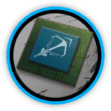 310505万 |
| 提升至精英阶段 1 等级 80 | 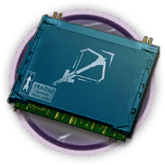 2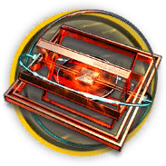 1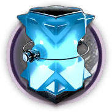 21010010万 |
干员模型
[编辑]- ↑ 此处游戏内原文是认识她警员，因存在明显笔误，我们对其进行了修正。
| ||||||||||||||||||||||||||||||||||||||||||||||||||||||||||||||||||||||||||||||||||||||||||||||||||||||||||||||||||||||||||||||||||||||||||||||||||||||||||||||||||||||||||||||||||||||||||||||||||||||||||||||||||||||||||||||||||||||||||||||||||||||||||||||||||||||||||||||||||||||||||||||||||||||||||||||||||||||||||||||||||||||||||||||||||||||||||||||||||||||||||||||||||||||||||||||||||||||||||||||||||||||||||||||||||